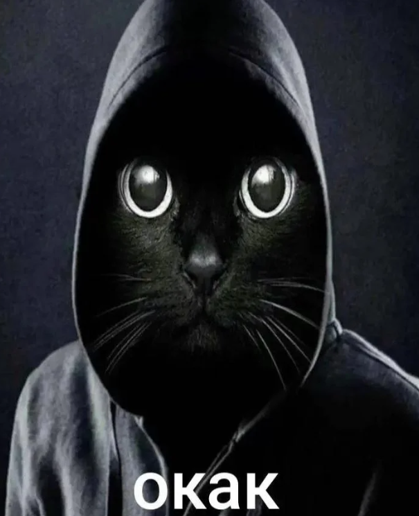

«Окак» — это мем из русскоязычного интернета, который взорвался в 2025 году. Всё началось с вирусного видео, где кот с каменным лицом повторяет «окак».
Абсурдная озвучка для ситуаций, когда слова излишни. Мем быстро разлетелся по TikTok, VK, Telegram — от реакций на фейлы до иронии. Однако наибольшую популярность этот мем получил в контексте переписок.
Мем стал универсальным. Кидают дедлайн — окак. Друг подводит — окак. Даже политики в монтажах вставляют. Плюс ремиксы с музыкой, плюс рандомные футажи!
Сейчас он эволюционирует в стикеры и гифки, однако суть та же: коротко, смешно, уместно, весело. В эпоху короткого контента работает идеально.